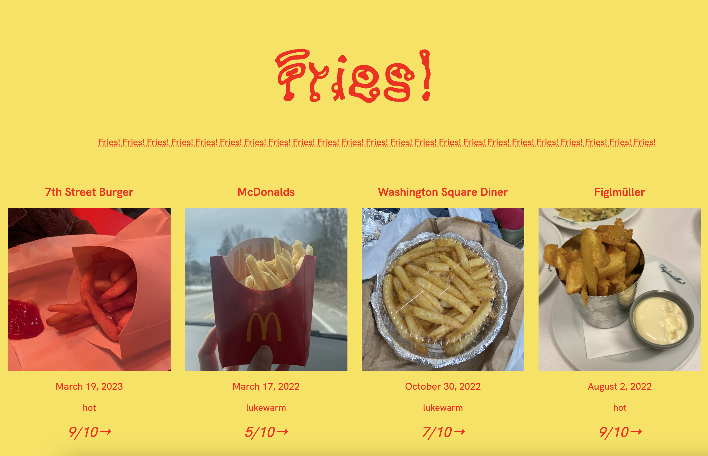

Last year I started a fry account on instagram, documenting fries. The information I’ve documented through this collection could be helpful for finding restaurants with good fries.
- For my data points, i compiled:
- - The photo of each item
- - Restaurant it is from
- - Photo of the fries
- - Temperature level
- - Date of consumption
- - Rating
I used Kaeru Kaeru for the title font and Hanken Grotesk for the body text